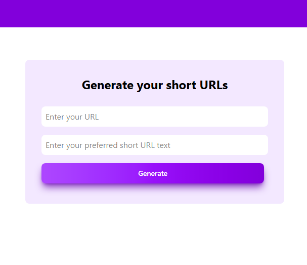

iTask
This is todo app made using tailwind css and react. has the functionality to add, check-off, edit, and delete todos

PassOP
This is a Password Manager made using react and tailwind css. It's saves your password in the local storage.

WeatherOP
It's a basic weather app which is made using weatherAPI, html, css and js. Tells you the temeparture, humidity, uv index, and wind speed of the place entered.

Calculator
A simple calculator inspired by the apple calculator.

Click Speed Test
This web-application can calculate your click speed. Made using HTML, CSS, and JS

BP Data Maintainer
This web app can save the readings of your Blood Pressure and organize the reports in a table form which you can view afterwards.
BitLinks
A basic URL shortener web app. No login or signup needed.